Portfolio / 2026
Understanding
movement,
behavior,
and invisible
patterns.
Hello.
I’m Nitin Singh.
A Berlin-based data analyst exploring forecasting, behavioral patterns, movement, and large-scale systems through data.
I enjoy understanding why systems behave differently under pressure — from transport congestion and customer drop-offs to hiring trends and operational inefficiencies.
I became obsessed with understanding why systems slow down, why users disappear halfway through funnels, and how invisible patterns shape real-world systems.
WHAT I WORK ON
SELECTED PROJECTS
Transport Network Analysis & Optimization System
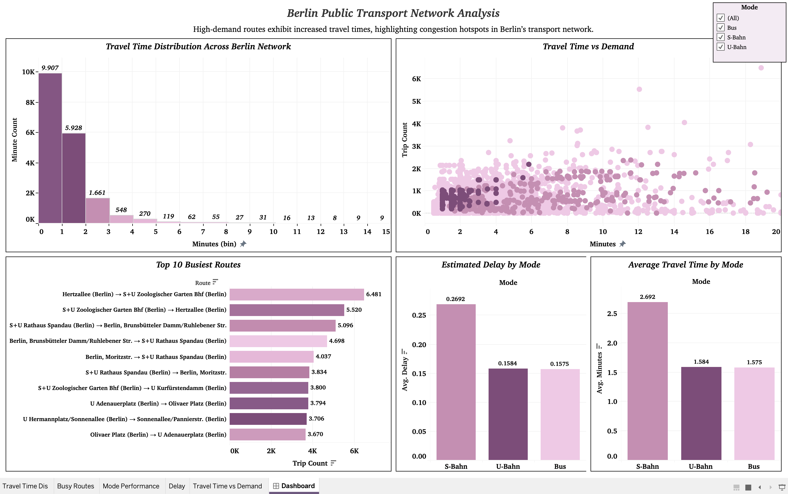
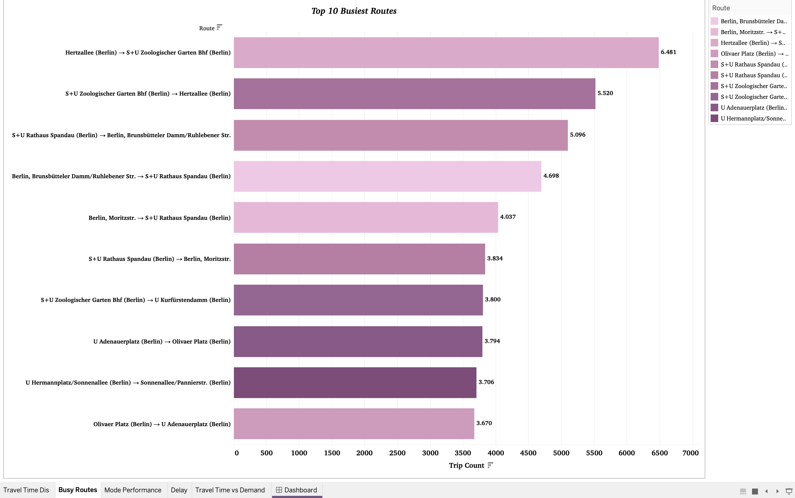
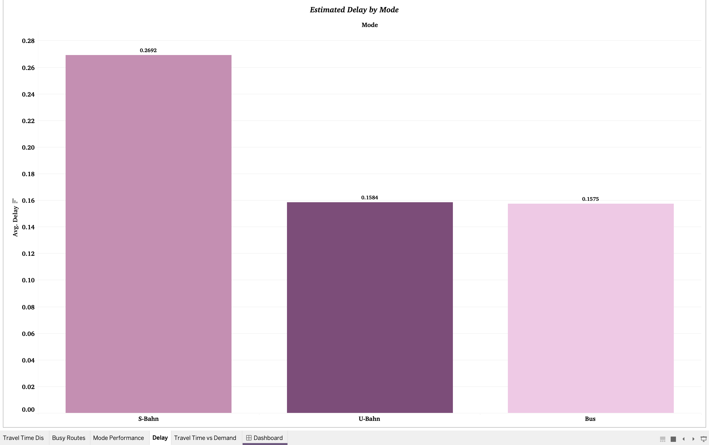
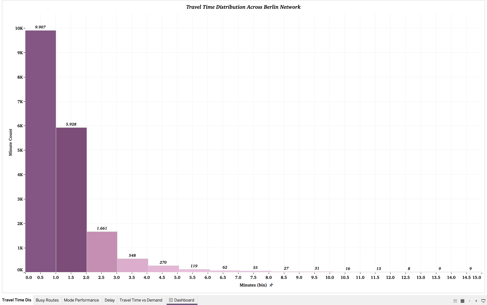
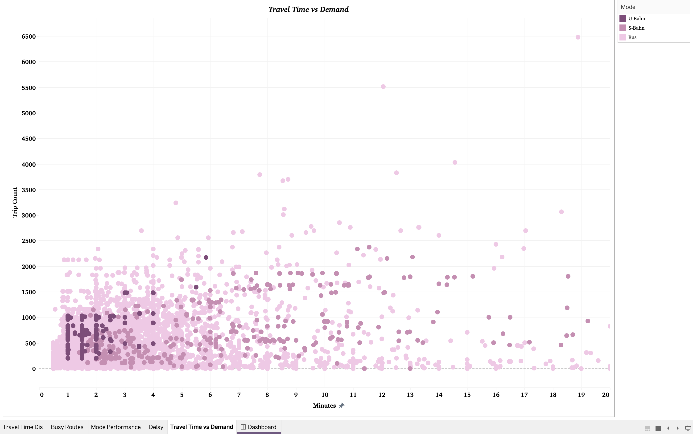
Processed and analyzed 34M+ GTFS records to identify congestion behavior, route inefficiencies, delay propagation, and operational variability across Berlin transport systems.
Built forecasting models and analytics systems to study peak-hour movement patterns and network optimization opportunities.
Germany Data Job Market Analysis
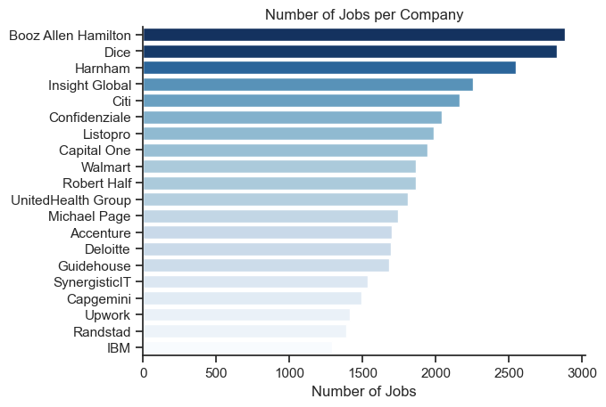
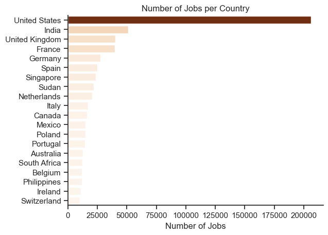
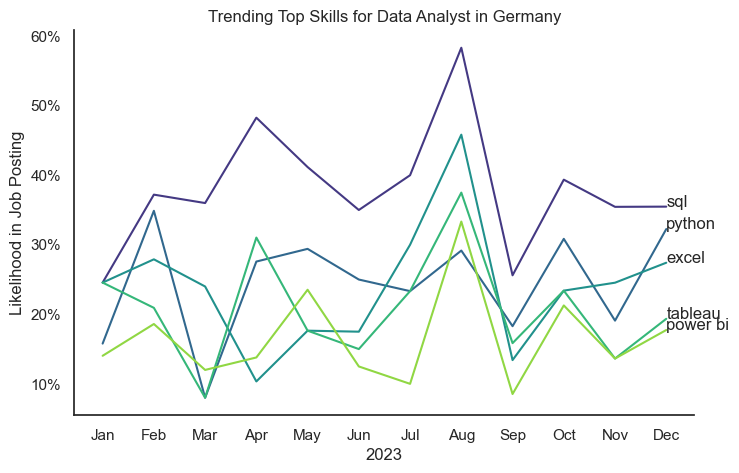
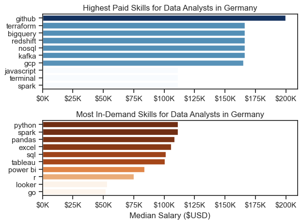
Analyzed 50K+ job postings across Germany to understand hiring trends, SQL demand, salary patterns, and BI ecosystem shifts.
Built preprocessing pipelines, skill-demand analysis, and market segmentation visualizations to understand the evolving analytics landscape.
E-Commerce Sales Performance Analysis
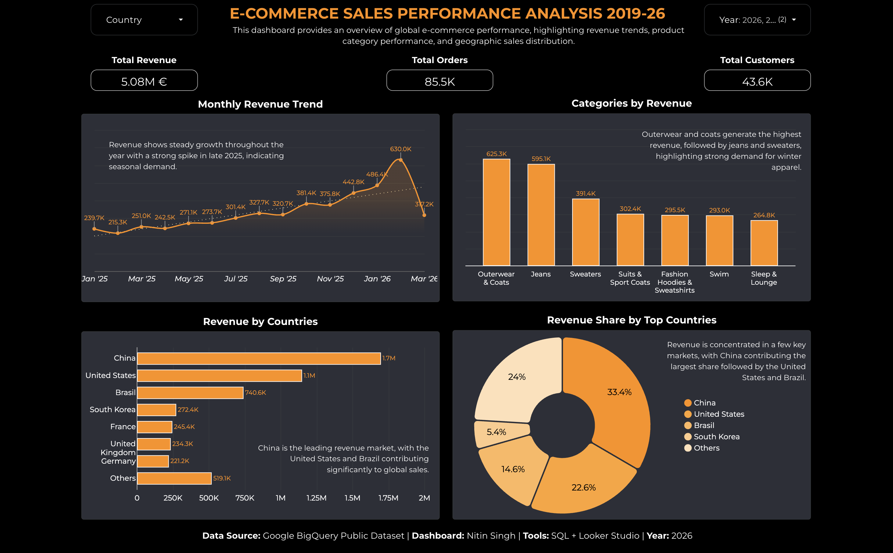
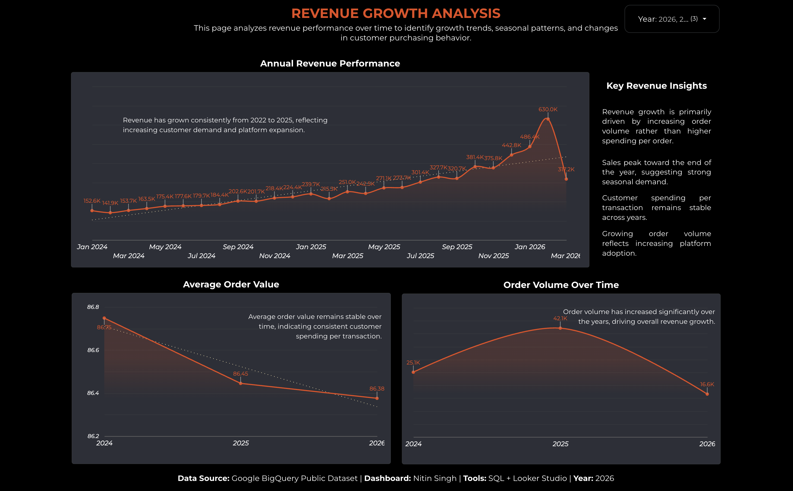
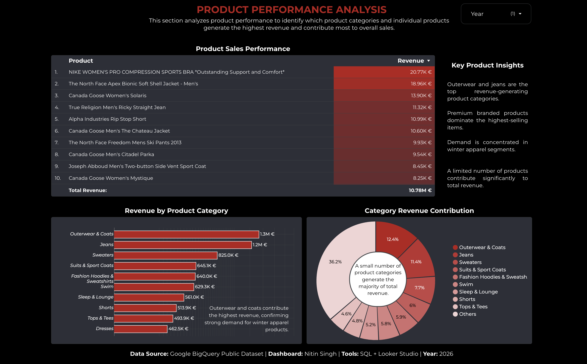
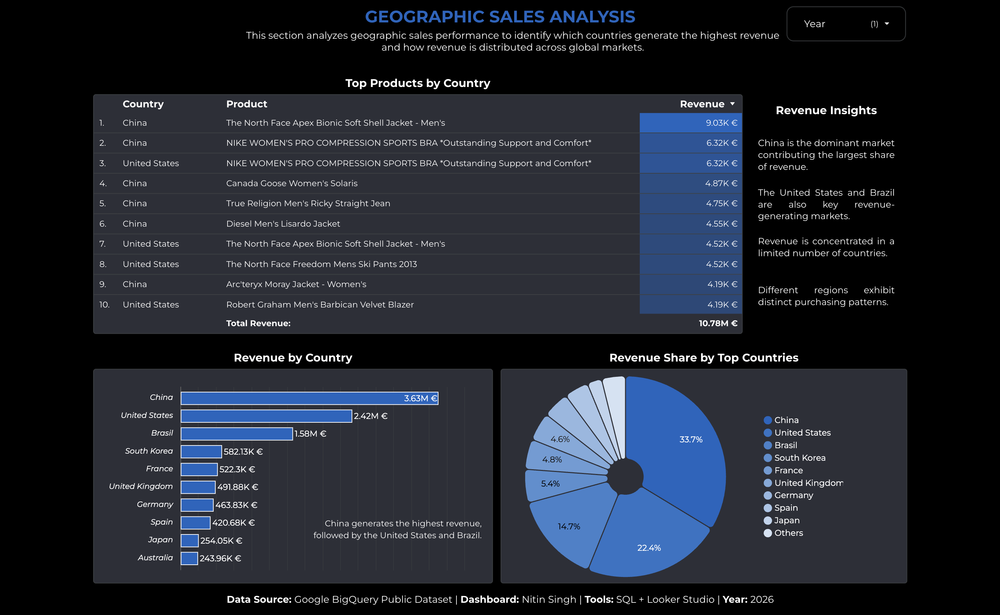
Explored customer behavior, revenue patterns, checkout abandonment, and purchasing trends using 1M+ transactions.
Built KPI dashboards, conversion funnel analysis, and segmentation insights to identify revenue optimization opportunities.
EXPERIENCE